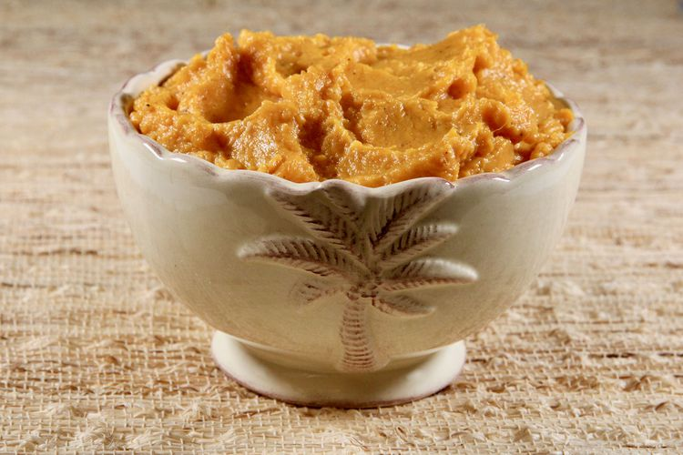

Sweet Potato Mash

Description
This is a savory dish for smooth and creamy sweet potatoes without all the sugar. (Makes enough for 5 people
Ingredients
- 6 Sweet potatoes
- 250ml Soured cream
- Salt and Pepper
Cooking Instructions
- Peel Potatoes and cut up into cubes about 4cm thick
- Boil Potatoes for 15 mins
- Drain and mash Potatoes, adding the sour cream and salt and pepper for taste